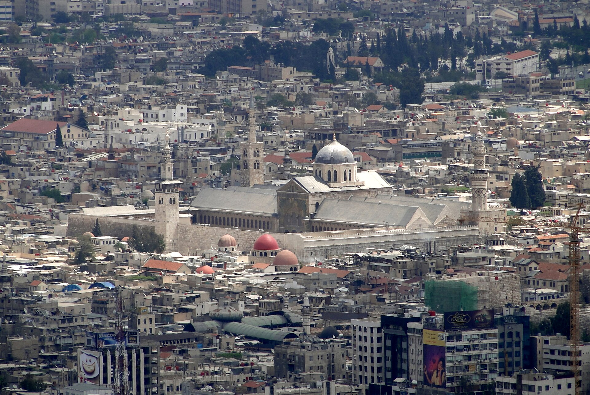

Uzbekistan Appoints Its First-Ever Ambassador to Syria
Ayubkhon Yunusov presented copies of his credentials to Syrian Foreign Minister Asaad al-Shaibani. The two sides discussed creating an intergovernmental commission on trade and economic cooperation and a mechanism for political consultations.

According to information released on Sept. 7, 2026, Ayubkhon Yunusov has become Uzbekistan's first ambassador to Syria. He presented copies of his credentials to Asaad al-Shaibani, foreign minister of the Syrian Arab Republic.
Yunusov has served as Uzbekistan's ambassador to Kuwait since February 2024 and to Iraq since October 2025. His residence is in Kuwait City — meaning the accreditation to Syria is also held concurrently.
What was discussed at the meeting
The two sides discussed establishing several mechanisms for bilateral cooperation. Among them are an Uzbek-Syrian intergovernmental commission on trade and economic cooperation and a mechanism for political consultations between the two countries' foreign ministries.
- Establishing an intergovernmental commission on trade and economic cooperation
- A mechanism for political consultations between the foreign ministries
- Implementing additional joint initiatives
Syria attaches great importance to developing relations with the countries of Central Asia, and with Uzbekistan in particular.
— Asaad al-Shaibani, Foreign Minister of Syria (from Gazeta.uz translation, 07.09.2026)
The Syrian foreign minister expressed gratitude for the assistance and support previously provided by Uzbekistan.
About the ambassador
Before his appointment to Kuwait, Ayubkhon Yunusov headed the Consular and Legal Department of the Ministry of Foreign Affairs. He graduated from the Tashkent Islamic Institute named after Imam Bukhari, Al-Azhar University in Egypt, the University of World Economy and Diplomacy, and the Tashkent State Law Institute.
His specializations are international law, Islamic studies and Arabic philology. He has worked in the Foreign Ministry system since 2003: at the central office, at the embassy in Saudi Arabia, and at the consulates general in Jeddah and Dubai.
By the numbers
- Ambassador: Ayubkhon Yunusov
- Residence: Kuwait City
- Accreditation to Kuwait: since February 2024
- Accreditation to Iraq: since October 2025
- On Syria: Uzbekistan's first-ever ambassador
- Date credentials were presented: September 2026
Syria's new diplomatic opening
Syria has been restoring diplomatic relations with a number of countries over the past two years. New ambassadors from Saudi Arabia, Brazil, South Korea and other countries have presented their credentials in Damascus.
Asaad al-Shaibani took up the post of Syria's foreign minister in the transitional government formed after the Bashar al-Assad government was overthrown in December 2024. He has since worked to restore relations with countries in the Middle East, Europe and Asia.
Uzbek–Syrian ties
Diplomatic relations between Uzbekistan and Syria were established after independence, but no Uzbek embassy was opened in Damascus and no ambassador was appointed. Ties between the two countries remained minimal for a long time.
During the war years in Syria, the most pressing issue for Central Asian states was the problem of citizens from the region who had joined militant groups and of their families. Since 2019, Uzbekistan has repatriated women and children from Syria and Iraq under several operations named “Mehr.”
According to official information, those repatriated under these operations went through rehabilitation programs. Cooperation along precisely these lines has formed the practical basis of ties between the two countries.
The trade and economic dimension
Trade volumes between Uzbekistan and Syria are currently very small. Syria's economy and infrastructure sustained major damage during the war years; the country was under an international sanctions regime.
The proposal to establish an intergovernmental commission is an attempt to put trade ties on a systematic footing. No official information has been released on the commission's timeline for creation or its composition.
Context
Diplomatic practice: what credentials are
Credentials are an official document signed by one country's head of state confirming an ambassador's authority to represent their state. In international practice, an ambassador first presents copies of the document to the receiving country's foreign ministry, with the originals presented later to the head of state.
From the moment copies are presented, an ambassador may begin work, but full official status takes effect once the originals are presented. Ayubkhon Yunusov's ceremony in Damascus belongs to this first stage.
Concurrent accreditation — one ambassador representing their country to several states — is a widespread practice in the diplomacy of small and medium-sized countries. It reduces the cost of opening embassies but limits the volume of day-to-day work.
Central Asia and Syria
Since the change of power in Syria, Central Asian states have been restoring ties with Damascus in stages. The issue matters to the region in two respects: first, security — citizens from the region were among the ranks of militant groups in Syria; and second, the reconstruction market — opportunities in construction, energy and supplying agricultural products.
Since 2019, Uzbekistan has conducted several operations to repatriate its citizens from Syria and Iraq. According to official information, most of those repatriated were women and children; rehabilitation and social adaptation programs were organized for them.
These operations have been noted by international organizations, and the experience of Central Asian states has been discussed as a model for other countries.
The Middle East track
Uzbekistan's Middle East policy has grown more active in recent years. Saudi Arabia, the United Arab Emirates and Qatar are investing in the country in energy, logistics and real estate. Cooperation is also developing in mosque and pilgrimage tourism.
In early September, rare exhibits from seven Uzbek museums went on display in Doha. This was one of the events along the cultural diplomacy track.
What remains unclear
The official announcements did not indicate whether an Uzbek embassy is planned for Damascus. The date of the intergovernmental commission's establishment, its composition and the timing of its first session have likewise not been announced.
There are no updated official statistics on trade turnover between the two countries.
Uzbekistan has been increasing its diplomatic activity in the Middle East in recent years. In early September, rare exhibits from seven Uzbek museums went on display in Doha. The Gulf states — Saudi Arabia, the UAE and Qatar — are among the principal partners investing in Uzbekistan.
Syria's new diplomatic era
Syria has been restoring international relations in stages since the change of power in December 2024. New ambassadors from Saudi Arabia, Brazil, South Korea and other countries have presented their credentials in Damascus.
Asaad al-Shaibani took up the post of foreign minister in the transitional government. He has since worked to restore relations with countries in the Middle East, Europe and Asia.
At the meeting, the Syrian minister said his country attaches great importance to developing relations with Central Asian states, and with Uzbekistan in particular, and expressed gratitude for the assistance previously provided.
The appointment of an ambassador to Syria is one of the steps in Central Asian states' process of restoring relations with Damascus. That the ambassador's residence remains in Kuwait indicates that a full embassy has not yet been opened in Damascus.
The presentation of copies of credentials is considered an initial stage in diplomatic practice; the originals are usually presented to the head of state.